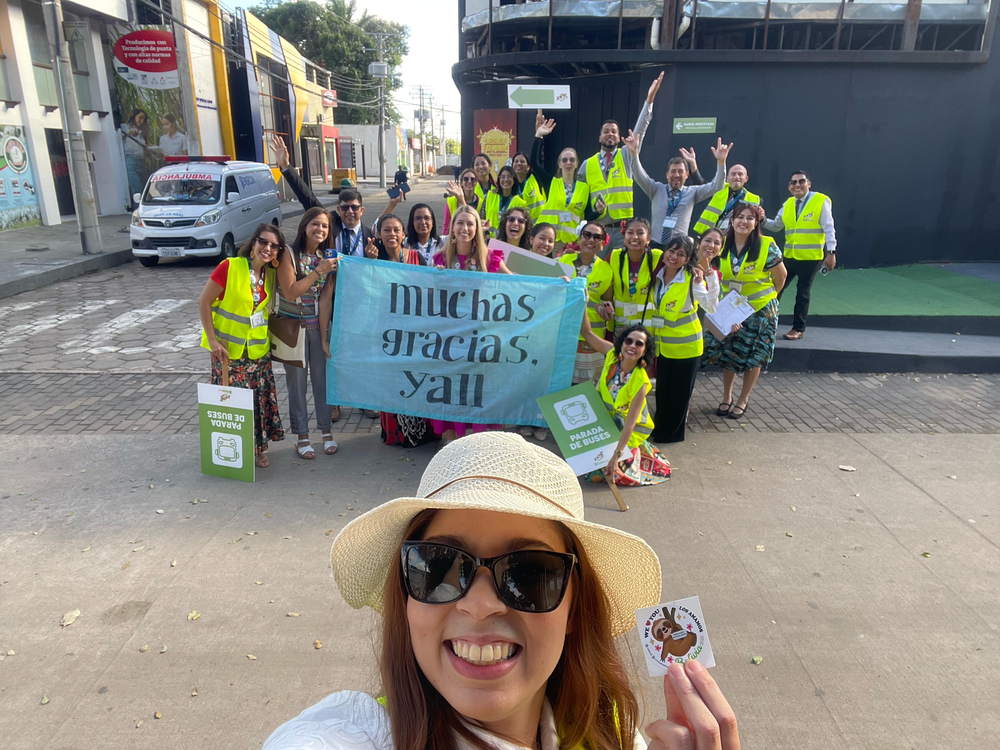
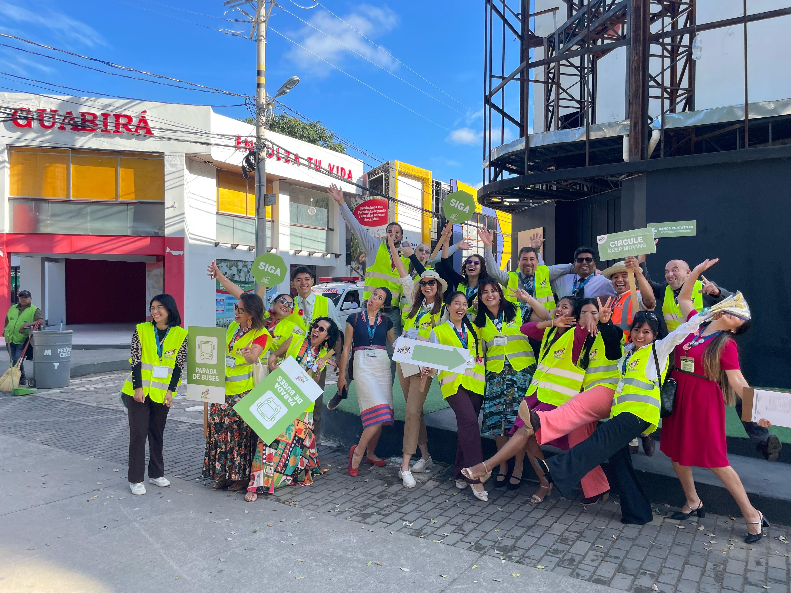

ESTACIONAMIENTO
CAPITANES REVISEN SUS TURNOS PARA EL SABADO
QUERIDOS VOLUNTARIOS HABLEN CON SUS CAPITANES CONFIRMANDO SU PRESENCIA PARA EL DIA DE MAÑANA, GRACIAS POR SU GRAN AYUDA.


Acceso a Turnos
ASAMBLEA ESPECIAL 1
VIERNES 09 - TURNO MAÑANA
VIERNES 09 - TURNO TARDE
SÁBADO 10 - TURNO MAÑANA
SÁBADO 10 - TURNO TARDE
DOMINGO 11 - TURNO MAÑANA
DOMINGO 11 - TURNO TARDE
PUNTO DE ENCUENTRO PARA EL TURNO DE LA MAÑANA A LAS 7:00 AM
EN EL TURNO DE LA TARDE A LAS 12:30 EL PUNTO DE ENCUENTRO ES DONDE ESTÁN SUS CAPITANES.